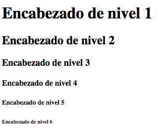
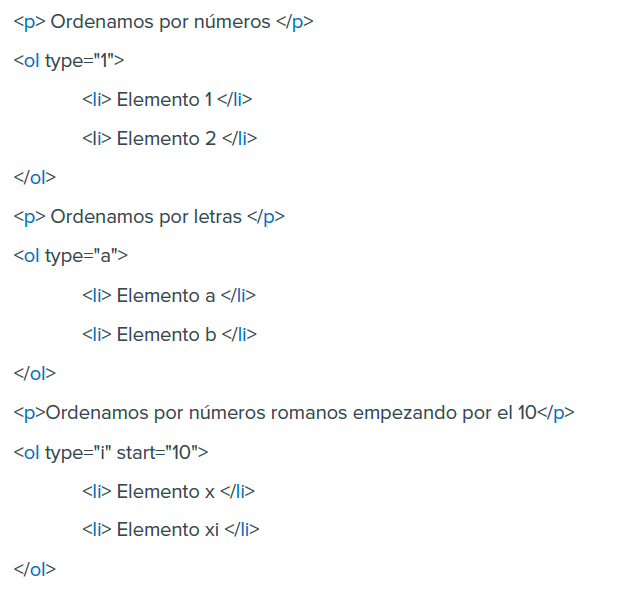
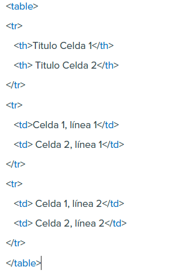

El Lenguaje de Marcado de Hipertexto o Hyper Text Markup Language (HTML) es el lenguaje que se utiliza para estructurar y desplegar una página web y sus contenidos respectivos. HTML es el lenguaje con el que se escribe el contenido de las páginas web. Las páginas web pueden ser vistas por el usuario mediante un tipo de aplicación llamada cliente web o más comúnmente "navegador". Podemos decir por lo tanto que el HTML es el lenguaje usado para especificar el contenido que los navegadores deben representar a la hora de mostrar una página web.
Texto alineado a la izquierda
Para una justificación al centro align="center":Texto alineado al centro
Para alinear a la derecha align="right":Texto alineado a la derecha
Texto en negrita y texto normal
Texto en itálica y texto normal
Texto subrayado y texto normal
Hay varios tipos de encabezados, que se diferencian visualmente en el tamaño de la letra que utilizan. La etiqueta en concreto es la H1, para los encabezados más grandes, H2 para los de segundo nivel y así hasta H6 que es el encabezado más pequeño. Pero lo importante es la estructura que denotan. Una página tendrá generalmente un encabezado de nivel 1 y dentro varios de nivel 2.
Podemos distinguir dos tipos de listas HTML:
LISTAS DESORDENADAS
Son delimitadas por las etiquetas UL y su cierre (unordered list). Cada uno de los elementos de la
lista es citado por medio de una etiqueta LI (list item).
Nota: La etiqueta LI tiene su respectiva etiqueta de cierre, aunque si no lo colocas, el navegador al
ver el siguiente LI interpretará que estás cerrando el anterior.
En la siguiente imagen vemos como seria la sintaxis.
Países del mundo
Tipos de viñetas
Podemos definir el tipo de viñeta empleada para cada elemento. Para ello debemos especificarlo
por medio del atributo type. Si queremos que el estilo sea válido para toda la lista lo incluiremos
dentro de la etiqueta de apertura UL, mientras que si queremos hacerlo específico a un solo
elemento lo incluiremos dentro de la etiqueta LI.
La sintaxis es del siguiente tipo:
"<"ul type="tipo de viñeta">"
Donde tipo de viñeta puede ser uno de los siguientes:
LISTAS ORDENADAS
Las listas ordenadas sirven también para presentar información en diversos elementos o items,
con la particularidad que éstos estarán precedidos de un número o una letra para enumerarlos
manteniendo un orden.
Para implementar listas ordenadas usaremos la etiqueta OL (ordered list) y su cierre. Cada
elemento será igualmente indicado por la etiqueta LI(list item).
Reglas de convivencia
Tipo de numeración
Del mismo modo que para las listas desordenadas, las listas ordenadas ofrecen la posibilidad de
modificar el estilo. En concreto nos es posible especificar el tipo de numeración empleado
eligiendo entre números (1, 2, 3, ...), letras (a, b, c, ...) y sus mayúsculas (A, B, C, ...) y números
romanos en sus versiones mayúsculas (I, II, III, ...) y minúsculas (i, ii, iii, ...).
Para realizar dicha selección hemos de utilizar, como para el caso precedente, el atributo type, el
cual será situado dentro de la etiqueta OL.
Los valores que puede tomar el atributo en este caso son:
Puede que en algún caso deseemos comenzar nuestra enumeración por un número o letra que no tiene por qué ser necesariamente el primero de todos. Para solventar esta situación, podemos utilizar un segundo atributo, start, que tendrá como valor un número. Este número, que por defecto es 1, corresponde al valor a partir del cual comenzamos a definir nuestra lista. Para el caso de las letras o los números romanos, el navegador se encarga de hacer la traducción del número a la letra correspondiente.
Ordenamos por números
Ordenamos por letras
Ordenamos por números romanos empezando por el 10
SINTAXIS DE UN ENLACE
Para colocar un enlace, nos serviremos de las etiquetas y su cierre. Dentro de la etiqueta de
apertura deberemos especificar asimismo el destino del enlace. Este destino será introducido bajo
forma de atributo, el cual lleva por nombre "href".
La sintaxis general de un enlace es por tanto de la forma:
< a> href="destino">contenido < /a>
Siendo el "contenido" un texto o una imagen. Es la parte de la página que se colocará activa y
donde deberemos pulsar para acceder al enlace. Por su parte, "destino" será una página, un
correo electrónico o un archivo.
Enlaces con imágenes
Ahora, si queremos que el contenido del enlace sea una imagen y no un texto, deberemos colocar
la correspondiente etiqueta < img> dentro de la etiqueta a.
TIPOS DE ENLACES
Tenemos que clasificarlos por su tipo, ya que,
dependiendo del mismo, algunas características pueden cambiar.
En función del destino los enlaces son clásicamente agrupados del siguiente modo:
La etiqueta que se usa para insertar una imagen es < img> (image). Esta etiqueta no posee su
cierre correspondiente y en ella hemos de especificar obligatoriamente el paradero de nuestro
archivo gráfico mediante el atributo src (source).
La sintaxis queda entonces de la siguiente forma:
<img src="camino_hacia_el_archivo.jpg">
ATRIBUTO ALT
Dentro de las comillas de este atributo colocaremos una breve descripción de la imagen. Esta
etiqueta no es indispensable, pero presenta varias utilidades. La sintaxis quedaría de esta manera:
<img src="mi_archivo.png" alt="Descripción de esta maravillosa imagen">
Primeramente, sirve para el posicionamiento de la página en buscadores. De los atributos alt el
buscador puede extraer palabras clave y le ayuda a entender qué función o contenido tiene la
imagen, y por lo tanto la página en sí.
Otra utilidad importante la encontramos en determinadas aplicaciones, usadas por personas con
discapacidad. Navegadores para gente con discapacidad visual, por ejemplo, no muestran las
imágenes y por tanto los alt ofrecen la posibilidad de leerlas.
Por último, durante el proceso de carga de la página y cuando la imagen no ha sido todavía
cargada, el navegador podría mostrar esta descripción, con lo que el navegante se puede hacer
una idea de lo que va en ese lugar. Si hubo problemas de conexión y no se pudo mostrar la
imagen, también podría usarse ese alt para mostrar al menos su descripción.
ETIQUETAS BÁSICAS PARA TABLAS EN HTML
Para empezar, las tablas son definidas por las etiquetas < table> y su cierre.
Dentro de estas dos etiquetas colocaremos todas las otras etiquetas de las tablas, hasta llegar a
las celdas. Dentro de las celdas ya es permitido colocar textos e imágenes que darán el contenido
a la tabla.
Las tablas son descritas por líneas de arriba a abajo (y luego por filas de izquierda a derecha). Cada una de estas líneas, llamadas columnas, es definida por otra etiqueta y su cierre: < tr> (table row: columna de tabla).
Asimismo, dentro de cada línea, habrá diferentes celdas. Cada una de estas celdas será definida por otra etiqueta: < td> (table data). Dentro de ésta y su cierre será donde coloquemos nuestro contenido, el contenido de cada celda.
También existe la etiqueta < th> (table header), que sirve para crear una celda cuyo contenido esté formateado como un título o cabecera de la tabla. En la práctica, lo que hace es poner en negrita y centrado el contenido de esa celda.
| Titulo Celda 1 | Titulo Celda 2 |
|---|---|
| Celda 1, línea 1 | Celda 2, línea 1 |
| Celda 1, línea 2 | Celda 2, línea 2 |
Los formularios son esas famosas cajas de texto y botones que podemos encontrar en muchas páginas web. Son muy utilizados para realizar búsquedas o bien para introducir datos personales por ejemplo en sitios de comercio electrónico. Los datos que el usuario introduce en estos campos son enviados al correo electrónico del administrador del formulario o bien a un programa que se encarga de procesarlo automáticamente.
¿CÓMO HACER UN FORMULARIO EN HTML?
Los formularios son definidos por medio de las etiquetas